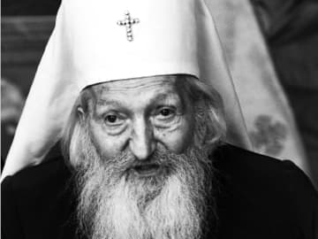
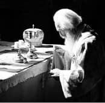

Când eram seminarist în anul I Domnul m-a învrednicit să primesc binecuvântare de la acest fericit și sfânt patriarh care binecuvânta România cu prezența și cu smeritele, matinalele, dar nu mai puțin dumnezeieștile și patriarhalele Sale Liturghii.
Peste ani, când deja eram monah, Domnul mi-a dat să-l întâlnesc din nou și în Serbia, la Palatul Patriarhal din Belgrad și în Catedrala Mitropolitană unde asista la vecernie. Cinsteam taina întâlnirii noastre providențiale în tăcere și admirație. Acum – la nașterea sa în cer – mă simt dator să scriu ceva despre Sanctitatea Sa, ca mai mulți oameni să-l cunoască, să-l iubească, să-i cinstească pomenirea și să se bucure de binecuvântarea Sa, de acum din înălțimile cerești.
În ședința Sfântului Sinod al Bisericii Serbiei pentru alegerea patriarhului (01.12.1990), conform Constituției Bisericii Serbiei, trebuia ca toți episcopii electori „să îi însemneze cu semnul crucii” pe cei trei candidați, care trebuiau să întrunească cel puțin 13 voturi. În prima rundă au fost aleși doar doi.
Al treilea, episcopul Pavel, din cauza insuficienței de voturi (11) a rămas în afară și doar la a noua rundă a fost ales prin 20 de voturi și a intrat în triada candidaților.
A urmat faza finală a alegerii prin sorți, adică printr-un mod apostolic: egumenul Mănăstirii Tronossa, după o rugăciune, scoate din cartea Evangheliei cele trei plicuri sigilate cu numele celor trei candidați, le amestecă și extrage unul, pe care îl înmânează președintelui, cel mai mare arhiereu, care, stând înaintea Ușilor Împărătești, arată plicul sigilat, îl deschide și comunică: „Arhiepiscop de Peci, Mitropolit de Belgrad și Karlovaț și Patriarh al Serbiei este Episcopul de Rasca și Prizren Pavle!”.
Comentând evenimentul, după 15 ani de la alegere, Mitropolitul Amfilohie de Muntenegru scria: „Unicul om, care într-adevăr n-a vrut să fie patriarh, a fost Patriarhul Pavel!”.
După alegere, adresându-se Sfântului Sinod, Patriarhul Pavel avea să spună: „Puterile mele sunt mici și voi o știți. Eu nu nădăjduiesc în ele. Nădăjduiesc în ajutorul vostru și repet, în ajutorul lui Dumnezeu, cu care El m-a sprijinit până astăzi. Să fie spre slava lui Dumnezeu și spre folosul Bisericii Sale și a poporului nostru încercat în aceste vremuri dificile”.
În ziua următoare, a întronizării în Catedrala Mitropolitană, a adus la cunoștință programul său în foarte puține cuvinte: „Urcându-mă ca al 44-lea patriarh al Serbiei în tronul Sfântului Sava nu am niciun program personal pentru misiunea patriarhală. Programul meu este Evanghelia lui Hristos sau frumosul ei mesaj despre Dumnezeu care este cu noi și despre Împărăția Lui dinăuntrul nostru – atâta vreme cât prin credință și prin iubire Îl primim”. A luat asupra sa îndatoririle patriarhale într-una din cele mai dificile perioade ale istoriei sârbe: în vremea războaielor, a presiunilor și a șantajelor puternicilor lumii, a tulburărilor interne și a sărăciei, în vremea contestării lucrurilor sfinte și cuvioase.
S-a împotrivit răului ori din ce parte ar fi venit, chemând la înțelepțire și pe compatrioți și pe străini. Accentua că: „Sub soare există destul spațiu pentru toți” și că: „De pace au nevoie la fel toți oamenii, precum noi, așa și vrăjmașii noștri”. De multe ori, cita texte din poezia sârbă populară, în care se zice: „Mai bine să ne pierdem capul, decât să ne pierdem sufletul”. Prin următoarele cuvinte ne învață că „avem obligația ca și în cea mai dificilă situație să ne comportăm ca oameni și că nu există interes, nici național, nici personal, care ar putea să constituie o justificare pentru a nu fi oameni”.

Aceste continuu repetate cuvinte ale sale - „să fim oameni” - au ajuns chiar și la urechile copiilor, care l-au numit „afectuos”, „Pavel-Pavel, să fim oameni”. Toți au auzit aceste cuvinte, însă mulți nu au vrut să asculte de ele. Printre aceștia, și cei care în patria sa (actuala Croație), în perioada războiului din anii ’90, au dărâmat o biserică ortodoxă numai și numai pentru faptul că în ea s-a botezat Patriarhul sârbilor! Aceasta s-a întâmplat deși pe o rază de 40 km de biserică nu aveau loc lupte.
Patriarhul Pavel era neobosit în săvârșirea îndatoririlor sale pastorale. Astfel, în toamna celui de-al 91-lea an al vieții sale, când a hotărât să viziteze Australia - printre altele pentru a sfinți un teren de 87 de hectare, pe care l-a cumpărat Biserica Sârbă pentru a construi acolo Colegiul „Sfântul Sava”, unde împreună cu copiii sârbi să învețe și copii ruși, greci și de alte națiuni - unii episcopi au încercat să-l întoarcă din drum, spunându-i că o călătorie de o așa durată este peste rezistența sa. Patriarhul i-a contrazis: „Pentru mine nu este greu, dar cum o vor scoate la capăt aceștia?” (arătând spre delegație). S-a dus în Australia încercând ca vizita de două săptămâni s-o prefacă în vizită misionară, cât mai cuprinzător ar fi fost cu putință. Când s-a întors la Belgrad, s-a dus direct la priveghere, chiar dacă timp de 22 de ore călătorise cu avionul și imediat, dimineața, a pornit spre Moscova.
Aflând toate acestea, gazda sa, Patriarhul Rusiei, Alexei al II-lea, glumind, l-a întrebat: „Sanctitate, ați făcut o așa mare călătorie, ați ajuns până și aici. Nu cumva vreți să vizitați și noua Zeelandă, deoarece și acolo există lume de-a noastră, ortodoxă?…”.
Patriarhul sârb a răspuns: „Sanctitate, de data aceasta nu am făcut-o, dar cu siguranță o voi face în următorii 90 de ani!”. Patriarhul Pavel, în pofida multelor sale îndatoriri, a trăit și o autentică viață monahală. În fiecare dimineață, în Paraclisul Patriarhiei slujea Sfânta Liturghie și se împărtășea, iar în fiecare seară era prezent în Catedrala Mitropolitană la slujba Vecerniei.
Înainte de a săvârși Dumnezeiasca Liturghie, nu pleca sub nici un motiv nicăieri.
Prin drumul vieții lui, începând din locul nașterii și continuând cu locurile unde a studiat până la acelea unde a slujit, a devenit un simbol unionist pentru Biserica Sârbă. De asemenea, prin viața sa și prin rolul său în lumea ortodoxă, el este și unul din simbolurile Ortodoxiei universale.
Când odată în anii războaielor recente, a văzut în drum din apartamentul său din Palatul Patriarhiei un grup de refugiați în ploaie, s-a coborât și a deschis marea ușă de lemn de stejar a Patriarhiei și i-a chemat să intre pentru a se adăposti de ploaie. Când colaboratorii i-au atras atenția că exista posibilitatea să intre și vreun rău-intenționat – era în timpul războiului – le-a răspuns: „Cum aș fi putut eu să dorm acolo sus, la cald, iar acești copii să stea în ploaie afară?!”.
Şi aceste cuvinte cutremurătoare sunt tot ale sale: „Dacă aș putea reuși – Dumnezeu Cel Înviat îmi este martor – aș sta înaintea bisericilor, a spitalelor și înaintea țărilor civilizate prin recepții și demonstrații la modă și personal aș fi cerșit milostenie pentru frații și copiii noștri încercați. Fiecare dintre noi ar trebui printr-un mod activ să se rușineze pentru toate acele ostentative lăcomii, care există în atâtea spații publice, nu doar să ne scandalizăm simplu și să deznădăjduim, că nesimțirea, nerușinarea, cinismul s-au generalizat în jurul nostru”.
Un bătrân monah din Sfântul Munte, care a fost coleg cu Patriarhul Pavel la Facultatea de Teologie din Atena (unde acesta și-a făcut studiile post-universitare între 1955-1957) povestea că Patriarhul Pavel în timpul șederii sale în Grecia, ori de câte ori circula cu autobuzul, iar acesta trecea pe lângă o biserică, viitorul Patriarh se ridica în picioare, drept, pentru a se însemna cu semnul crucii. Când monahul din Muntele Athos l-a întrebat de ce procedează așa, i-a răspuns: „Dar soldații când își întâlnesc superiorul se ridică drepți. Cu atât mai mult noi creștinii când Îl întâlnim pe Stăpânul Hristos, Care se află cu Trupul în Chivotele Bisericilor noastre”. Starețul athonit amintea de această întâmplare ca grăitoare pentru evlavia și adânca simțire duhovnicească pe care o avea fericitul Părinte Pavel.
Patriarhul se îngrijea singur în toate. La vârsta de 92 de ani, încă își gătea singur, conform regimului său: aproape toată durata anului era post pentru el. De obicei, mânca legume fierte, ulei adăuga doar la sărbători, foarte rar pește, iar carne niciodată. Băutura sa favorită era sucul de roșii, iar mâncarea sa preferată erau urzicile. Când nu postea, mânca lactate. Hainele și le cosea singur, le aranja și le spăla el însuși, după cum își repara și își lustruia și pantofii.
În afară de acestea, lua aminte și la ceea ce se întâmpla în jurul său. La Patriarhie supraveghea și se îngrijea ca toate să funcționeze cât mai bine cu putință. Când orarul de muncă se termina și toți plecau, atunci Patriarhul venea și stingea luminile pe care angajații le uitau aprinse.
Foarte des, singur, repara instalațiile sanitare, ferestrele, blocajele…
Avea grijă pretutindeni unde era nevoie și asupra lucrurilor pământești, chiar dacă accentua că adevărata noastră patrie este „sus”. De aceea, amintea că trebuie să fim atenți: „Într-o zi, când ne vom înfățișa înaintea strămoșilor noștri, să nu ne fie rușine de ei, nici lor să le fie rușine de noi”.
De acolo de sus, să te rogi pentru noi, Sfinte Ierarhe!
Odihnă cu drepții și înviere frumoasă, batiușca!
